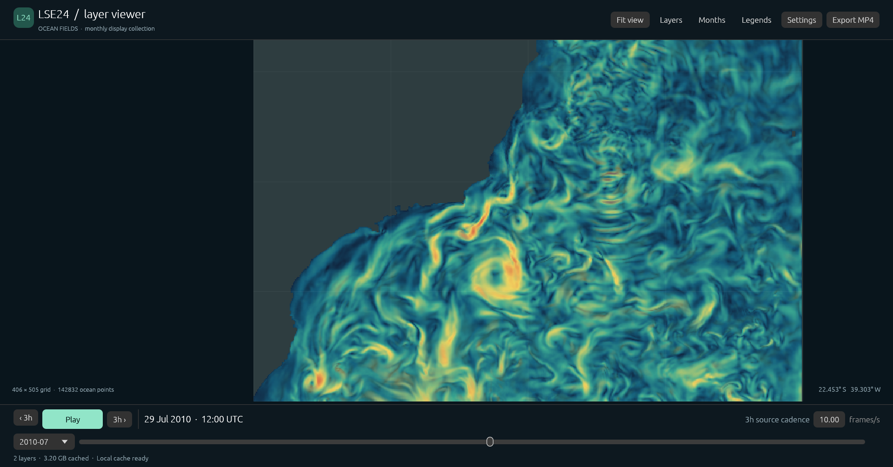
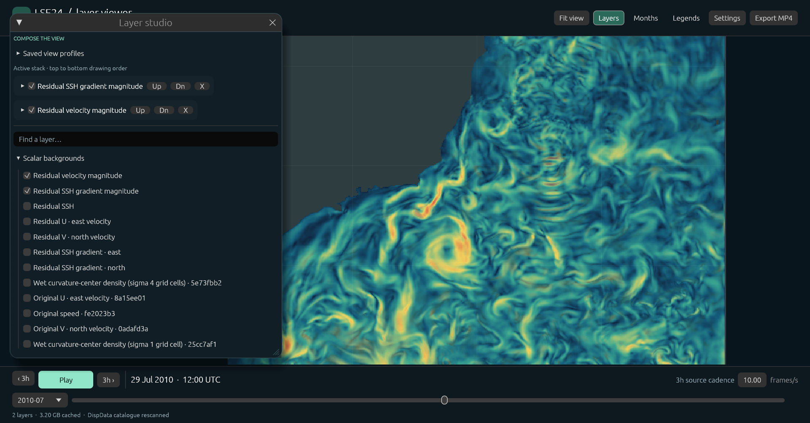
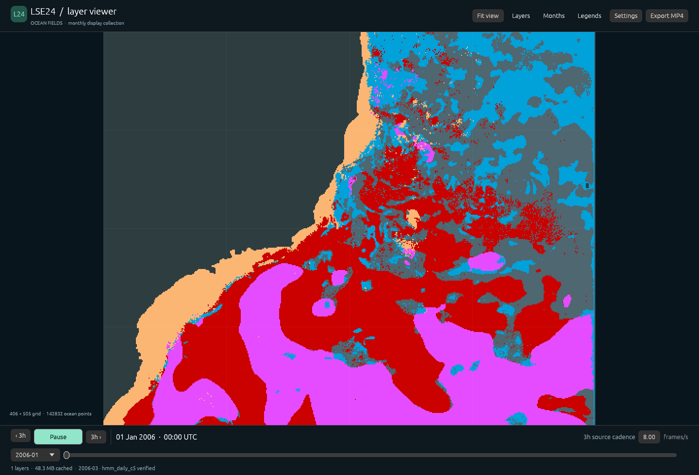
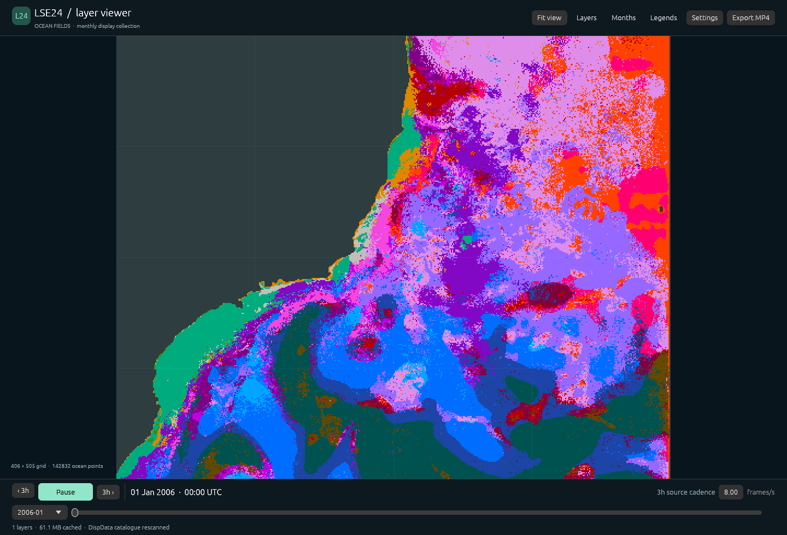
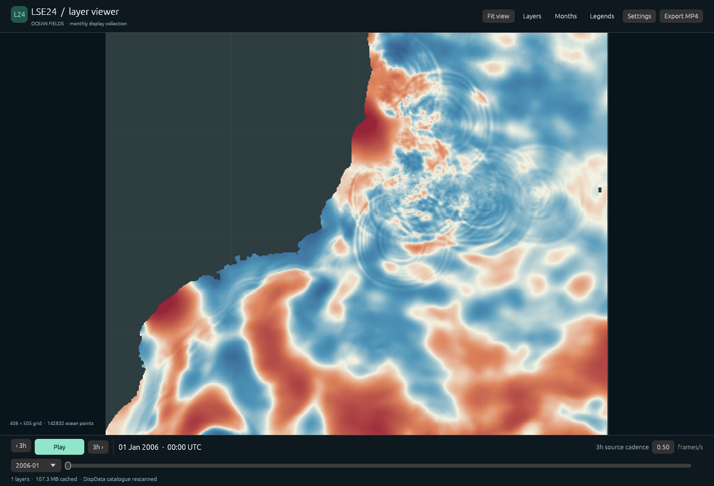

Ver o oceano
em movimento
Do campo de velocidades às trajetórias: ferramentas para explorar o LSE24.
Pedro · LabFluid (Fábio, Danilo, Ricardo, Pedro, Luana)
O que está acontecendo
no Sudeste?
Na região da Guiana, observamos vórtices se desprendendo com nitidez. Queremos investigar como estruturas do escoamento aparecem no Sudeste e como evoluem.
Precisamos ver os dados de vários ângulos, no mesmo lugar.

Dados volumosos; exploração difícil
u, v e altura da superfície
em ~52 GiB
- Preparamos representações mais leves.
- Menos pontos ou instantes quando isso basta para enxergar.
- Codificação mais compacta.
Sobrepor perguntas no mapa

As camadas são produzidas separadamente; o visualizador reúne os resultados para exploração.
Estados que mudam com o tempo
Uma HMM descreve uma sequência de estados ocultos: em cada dia, o modelo pode permanecer no mesmo estado ou mudar para outro.
Cada estado tem uma distribuição que descreve quais observações são mais prováveis nele.
Modelo de Markov oculto · exemplo sintético/ilustrativo.
Um resumo para cada dia
Em cada ponto do mapa, dividimos a série em janelas diárias consecutivas, sem sobreposição.
Ao longo de 24 horas
Resumimos velocidade e altura da superfície por médias, variações e uma medida de rotação.
Ao longo dos dias
A sequência desses resumos alimenta uma HMM para aquele ponto.
Cada janela corresponde a um dia UTC; a classificação mostrada usa uma análise retrospectiva da sequência.
Do ponto individual ao mapa
1 · Uma HMM por ponto
Cada modelo aprende seus estados a partir da série local.
2 · Agrupar estados semelhantes
Comparamos suas distribuições e formamos um vocabulário comum de grupos para o mapa.
Reajustamos as transições de cada ponto com as distribuições agrupadas e inferimos a sequência de estados.
Exemplo a seguir: cinco grupos; as cores identificam categorias.
Classificação HMM


Mesmo instante e mesma região.
SSH residual

Mesmo instante e mesma região.
E se seguirmos a água?
Olhar um lugar
Em cada posição do mapa, vemos a velocidade naquele instante.
Visão euleriana
Seguir um percurso
Partimos de um ponto e acompanhamos para onde uma partícula iria ao longo do tempo.
Visão lagrangiana
Uma trajetória conta mais
que seu destino
Curvatura
Onde o percurso dobra? Quanto ele dobra e para qual lado?
Tendência de rotação
Ao longo de uma janela, qual sentido de giro predomina na posição ou na velocidade?
Mude a tendência; veja a curva
−1: predomínio horário · +1: predomínio anti-horário
Ajustes da demonstração
Exemplo matemático, não uma trajetória observada. As setas indicam o avanço no tempo. O índice resume o balanço espectral entre os dois sentidos; não conta voltas.
Conectar medidas e estruturas reais
Queremos colocar trajetórias e suas características ao lado dos campos e das classificações, e observar onde as leituras se reforçam ou divergem.
Luana está se juntando ao grupo como pós-doutoranda com experiência em sistemas dinâmicos.
O que seria útil explorar juntos?
- Quais regiões ou fenômenos valem uma primeira análise conjunta?
- Que camadas ou comparações ajudariam mais?
- Como disponibilizar dados e programas de modo útil para vocês?
Obrigado.
Fim da apresentação principal · os próximos slides são material de apoio.
Definição do índice rotacional
Para a série complexa de uma curva plana, separamos frequências positivas e negativas:
\[z(t)=c_0+\sum_{j>0}c_j e^{2\pi ijt}+\sum_{j<0}c_j e^{2\pi ijt}.\]
\[E_+=\sum_{j>0}|c_j|^2,\quad E_-=\sum_{j<0}|c_j|^2,\qquad r=\frac{E_+-E_-}{E_++E_-}.\]
O índice varia de −1 a 1. Zero significa equilíbrio entre as duas energias, não ausência de movimento.
O índice é indefinido se ambas forem zero. Em amostras discretas de tamanho par, a componente de Nyquist pede tratamento separado.
Como geramos a curva sintética
Sorteamos coeficientes complexos com \(\mathbb{E}|c_{\pm j}|^2=1/j^2\). Para um alvo \(-1<B<1\), usamos
\[\alpha^2=\frac{E_-(1+B)}{E_+(1-B)}.\]
Multiplicamos os coeficientes positivos por \(\sqrt\alpha\) e os negativos por \(1/\sqrt\alpha\).
Nos extremos, zeramos o lado oposto. Para ajustar o índice da velocidade, calculamos as energias com pesos \(j^2\).
A curva é periódica; desenhamos apenas a metade inicial.
O que é o SSH residual?
SSH é a altura da superfície do mar. Para obter o residual, subtraímos de cada série uma reconstrução de maré e as oscilações sazonais anual e semianual ajustadas.
Isso deixa em evidência variações da superfície em outras escalas de tempo.
A reconstrução de maré inclui a média ajustada. Marés e sazonalidade são ajustadas separadamente sobre a série original, nos primeiros 70% do registro.
Que ciclos removemos?
Marés semidiurnas
M2: 12,42 h · S2: 12,00 h
K2: 11,97 h · N2: 12,66 h
Marés diurnas
O1: 25,82 h · K1: 23,93 h
Q1: 26,87 h · P1: 24,07 h
Correção sazonal
Harmônicas anual e semianual: 8.766 h e 4.383 h (365,25 e 182,625 dias).
Estima-se cada uma com senos e cossenos ajustados à série original, separadamente da maré.
Subtraímos as harmônicas sazonais; o intercepto desse ajuste é preservado.
Períodos de maré aproximados: NOAA · Tidal Datums and Their Applications.
Como usamos o UTide
O UTide ajusta as amplitudes e fases das componentes de maré a uma série temporal e reconstrói sua contribuição.
- Ajuste de SSH em cada ponto.
- Ajuste conjunto das velocidades originais leste e norte.
- Mesmas oito constituintes; ajuste robusto, correções nodais e sem tendência linear.
No LSE24
Os ajustes usam os primeiros 70% do registro horário. Reconstruímos e subtraímos a maré e a média ajustada pelo UTide; também subtraímos as harmônicas sazonais calculadas à parte.
O resultado alimenta as características diárias e as visualizações de SSH residual.
Referência: Codiga · UTide.